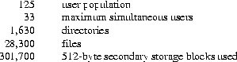
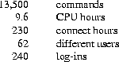

There have been four versions of the Unix time-sharing system. 12 The earliest (circa 1969-70) ran on the Digital Equipment Corporation PDP-7 and -9 computers. The second version ran on the unprotected PDP-11/20 computer. The third incorporated multiprogramming and ran on the PDP-11/34, /40, /45, /60, and /70 computers; it is the one described in the previously published version of this paper, and is also the most widely used today. This paper describes only the fourth, current system that runs on the PDP-11/70 and the Interdata 8/32 computers. In fact, the differences among the various systems is rather small; most of the revisions made to the originally published version of this paper, aside from those concerned with style, had to do with details of the implementation of the file system.
Since PDP-11 Unix became operational in February, 1971, over 600 installations have been put into service. Most of them are engaged in applications such as computer science education, the preparation and formatting of documents and other textual material, the collection and processing of trouble data from various switching machines within the Bell System, and recording and checking telephone service orders. Our own installation is used mainly for research in operating systems, languages, computer networks, and other topics in computer science, and also for document preparation.
Perhaps the most important achievement of Unix is to demonstrate that a powerful operating system for interactive use need not be expensive either in equipment or in human effort: it can run on hardware costing as little as $40,000, and less than two man-years were spent on the main system software. We hope, however, that users find that the most important characteristics of the system are its simplicity, elegance, and ease of use.
Besides the operating system proper, some major programs available under Unix are
C compiler Text editor based on QED[1]; Assembler, linking loader, symbolic debugger Phototypesetting and equation setting programs[2, 3]
The PDP-11/70 on which the Research Unix system is installed is a 16-bit word (8-bit byte) computer with 768K bytes of core memory; the system kernel occupies 90K bytes about equally divided between code and data tables. This system, however, includes a very large number of device drivers and enjoys a generous allotment of space for I/O buffers and system tables; a minimal system capable of running the software mentioned above can require as little as 96K bytes of core altogether. There are even larger installations; see the description of the PWB/UNIX systems [4, 5], for example. There are also much smaller, though somewhat restricted, versions of the system [6].
Our own PDP-11 has two 200-Mb moving-head disks for file system storage and swapping. There are 20 variable-speed communications interfaces attached to 300- and 1200-baud data sets, and an additional 12 communication lines hard-wired to 9600-baud terminals and satellite computers. There are also several 2400- and 4800-baud synchronous communication interfaces used for machine-to-machine file transfer. Finally, there is a variety of miscellaneous devices including nine-track magnetic tape, a line printer, a voice synthesizer, a phototypesetter, a digital switching network, and a chess machine.
The preponderance of Unix software is written in the abovementioned C language [7]. Early versions of the operating system were written in assembly language, but during the summer of 1973, it was rewritten in C. The size of the new system was about one-third greater than that of the old. Since the new system not only became much easier to understand and to modify but also included many functional improvements, including multiprogramming and the ability to share reentrant code among several user programs, we consider this increase in size quite acceptable.
The most important role of the system is to provide a file system. From the point of view of the user, there are three kinds of files: ordinary disk files, directories, and special files.
A file contains whatever information the user places on it, for example, symbolic or binary (object) programs. No particular structuring is expected by the system. A file of text consists simply of a string of characters, with lines demarcated by the newline character. Binary programs are sequences of words as they will appear in core memory when the program starts executing. A few user programs manipulate files with more structure; for example, the assembler generates, and the loader expects, an object file in a particular format. However, the structure of files is controlled by the programs that use them, not by the system.
Directories provide the mapping between the names of files and the files themselves, and thus induce a structure on the file system as a whole. Each user has a directory of his own files; he may also create subdirectories to contain groups of files conveniently treated together. A directory behaves exactly like an ordinary file except that it cannot be written on by unprivileged programs, so that the system controls the contents of directories. However, anyone with appropriate permission may read a directory just like any other file.
The system maintains several directories for its own use. One of these is the root directory. All files in the system can be found by tracing a path through a chain of directories until the desired file is reached. The starting point for such searches is often the root. Other system directories contain all the programs provided for general use; that is, all the commands. As will be seen, however, it is by no means necessary that a program reside in one of these directories for it to be executed.
Files are named by sequences of 14 or fewer characters. When the name of a file is specified to the system, it may be in the form of a path name, which is a sequence of directory names separated by slashes, ``/'', and ending in a file name. If the sequence begins with a slash, the search begins in the root directory. The name /alpha/beta/gamma causes the system to search the root for directory alpha, then to search alpha for beta, finally to find gamma in beta. gamma may be an ordinary file, a directory, or a special file. As a limiting case, the name ``/'' refers to the root itself.
A path name not starting with ``/'' causes the system to begin the search in the user's current directory. Thus, the name alpha/beta specifies the file named beta in subdirectory alpha of the current directory. The simplest kind of name, for example, alpha, refers to a file that itself is found in the current directory. As another limiting case, the null file name refers to the current directory.
The same non-directory file may appear in several directories under possibly different names. This feature is called linking; a directory entry for a file is sometimes called a link. The Unix system differs from other systems in which linking is permitted in that all links to a file have equal status. That is, a file does not exist within a particular directory; the directory entry for a file consists merely of its name and a pointer to the information actually describing the file. Thus a file exists independently of any directory entry, although in practice a file is made to disappear along with the last link to it.
Each directory always has at least two entries. The name ``.'' in each directory refers to the directory itself. Thus a program may read the current directory under the name ``.'' without knowing its complete path name. The name ``..'' by convention refers to the parent of the directory in which it appears, that is, to the directory in which it was created.
The directory structure is constrained to have the form of a rooted tree. Except for the special entries ``.'' and ``..'', each directory must appear as an entry in exactly one other directory, which is its parent. The reason for this is to simplify the writing of programs that visit subtrees of the directory structure, and more important, to avoid the separation of portions of the hierarchy. If arbitrary links to directories were permitted, it would be quite difficult to detect when the last connection from the root to a directory was severed.
Special files constitute the most unusual feature of the Unix file system. Each supported I/O device is associated with at least one such file. Special files are read and written just like ordinary disk files, but requests to read or write result in activation of the associated device. An entry for each special file resides in directory /dev, although a link may be made to one of these files just as it may to an ordinary file. Thus, for example, to write on a magnetic tape one may write on the file /dev/mt. Special files exist for each communication line, each disk, each tape drive, and for physical main memory. Of course, the active disks and the memory special file are protected from indiscriminate access.
There is a threefold advantage in treating I/O devices this way: file and device I/O are as similar as possible; file and device names have the same syntax and meaning, so that a program expecting a file name as a parameter can be passed a device name; finally, special files are subject to the same protection mechanism as regular files.
Although the root of the file system is always stored on the same device, it is not necessary that the entire file system hierarchy reside on this device. There is a mount system request with two arguments: the name of an existing ordinary file, and the name of a special file whose associated storage volume (e.g., a disk pack) should have the structure of an independent file system containing its own directory hierarchy. The effect of mount is to cause references to the heretofore ordinary file to refer instead to the root directory of the file system on the removable volume. In effect, mount replaces a leaf of the hierarchy tree (the ordinary file) by a whole new subtree (the hierarchy stored on the removable volume). After the mount, there is virtually no distinction between files on the removable volume and those in the permanent file system. In our installation, for example, the root directory resides on a small partition of one of our disk drives, while the other drive, which contains the user's files, is mounted by the system initialization sequence. A mountable file system is generated by writing on its corresponding special file. A utility program is available to create an empty file system, or one may simply copy an existing file system.
There is only one exception to the rule of identical treatment of files on different devices: no link may exist between one file system hierarchy and another. This restriction is enforced so as to avoid the elaborate bookkeeping that would otherwise be required to assure removal of the links whenever the removable volume is dismounted.
Although the access control scheme is quite simple, it has some unusual features. Each user of the system is assigned a unique user identification number. When a file is created, it is marked with the user ID of its owner. Also given for new files is a set of ten protection bits. Nine of these specify independently read, write, and execute permission for the owner of the file, for other members of his group, and for all remaining users.
If the tenth bit is on, the system will temporarily change the user identification (hereafter, user ID) of the current user to that of the creator of the file whenever the file is executed as a program. This change in user ID is effective only during the execution of the program that calls for it. The set-user-ID feature provides for privileged programs that may use files inaccessible to other users. For example, a program may keep an accounting file that should neither be read nor changed except by the program itself. If the set-user-ID bit is on for the program, it may access the file although this access might be forbidden to other programs invoked by the given program's user. Since the actual user ID of the invoker of any program is always available, set-user-ID programs may take any measures desired to satisfy themselves as to their invoker's credentials. This mechanism is used to allow users to execute the carefully written commands that call privileged system entries. For example, there is a system entry invokable only by the ``super-user'' (below) that creates an empty directory. As indicated above, directories are expected to have entries for ``.'' and ``..''. The command which creates a directory is owned by the super-user and has the set-user-ID bit set. After it checks its invoker's authorization to create the specified directory, it creates it and makes the entries for ``.'' and ``..''.
Because anyone may set the set-user-ID bit on one of his own files, this mechanism is generally available without administrative intervention. For example, this protection scheme easily solves the MOO accounting problem posed by ``Aleph-null.'' [8]
The system recognizes one particular user ID (that of the ``super-user'') as exempt from the usual constraints on file access; thus (for example), programs may be written to dump and reload the file system without unwanted interference from the protection system.
The system calls to do I/O are designed to eliminate the differences between the various devices and styles of access. There is no distinction between ``random'' and ``sequential'' I/O, nor is any logical record size imposed by the system. The size of an ordinary file is determined by the number of bytes written on it; no predetermination of the size of a file is necessary or possible.
To illustrate the essentials of I/O, some of the basic calls are summarized below in an anonymous language that will indicate the required parameters without getting into the underlying complexities. Each call to the system may potentially result in an error return, which for simplicity is not represented in the calling sequence.
To read or write a file assumed to exist already, it must be opened by the following call:
filep = open(name, flag)
The returned value filep is called a file descriptor. It is a small integer used to identify the file in subsequent calls to read, write, or otherwise manipulate the file.
To create a new file or completely rewrite an old one, there is a create system call that creates the given file if it does not exist, or truncates it to zero length if it does exist; create also opens the new file for writing and, like open, returns a file descriptor.
The file system maintains no locks visible to the user, nor is there any restriction on the number of users who may have a file open for reading or writing. Although it is possible for the contents of a file to become scrambled when two users write on it simultaneously, in practice difficulties do not arise. We take the view that locks are neither necessary nor sufficient, in our environment, to prevent interference between users of the same file. They are unnecessary because we are not faced with large, single-file data bases maintained by independent processes. They are insufficient because locks in the ordinary sense, whereby one user is prevented from writing on a file that another user is reading, cannot prevent confusion when, for example, both users are editing a file with an editor that makes a copy of the file being edited.
There are, however, sufficient internal interlocks to maintain the logical consistency of the file system when two users engage simultaneously in activities such as writing on the same file, creating files in the same directory, or deleting each other's open files.
Except as indicated below, reading and writing are sequential. This means that if a particular byte in the file was the last byte written (or read), the next I/O call implicitly refers to the immediately following byte. For each open file there is a pointer, maintained inside the system, that indicates the next byte to be read or written. If n bytes are read or written, the pointer advances by n bytes.
Once a file is open, the following calls may be used:
n = read(filep, buffer, count) n = write(filep, buffer, count)
Bytes written affect only those parts of a file implied by the position of the write pointer and the count; no other part of the file is changed. If the last byte lies beyond the end of the file, the file is made to grow as needed.
To do random (direct-access) I/O it is only necessary to move the read or write pointer to the appropriate location in the file.
location = lseek(filep, offset, base)
There are several additional system entries having to do with I/O and with the file system that will not be discussed. For example: close a file, get the status of a file, change the protection mode or the owner of a file, create a directory, make a link to an existing file, delete a file.
As mentioned in Section 3.2 above, a directory entry contains only a name for the associated file and a pointer to the file itself. This pointer is an integer called the i-number (for index number) of the file. When the file is accessed, its i-number is used as an index into a system table (the i-list) stored in a known part of the device on which the directory resides. The entry found thereby (the file's i-node) contains the description of the file:
When a new file is created, an i-node is allocated for it and a directory entry is made that contains the name of the file and the i-node number. Making a link to an existing file involves creating a directory entry with the new name, copying the i-number from the original file entry, and incrementing the link-count field of the i-node. Removing (deleting) a file is done by decrementing the link-count of the i-node specified by its directory entry and erasing the directory entry. If the link-count drops to 0, any disk blocks in the file are freed and the i-node is de-allocated.
The space on all disks that contain a file system is divided into a number of 512-byte blocks logically addressed from 0 up to a limit that depends on the device. There is space in the i-node of each file for 13 device addresses. For nonspecial files, the first 10 device addresses point at the first 10 blocks of the file. If the file is larger than 10 blocks, the 11 device address points to an indirect block containing up to 128 addresses of additional blocks in the file. Still larger files use the twelfth device address of the i-node to point to a double-indirect block naming 128 indirect blocks, each pointing to 128 blocks of the file. If required, the thirteenth device address is a triple-indirect block. Thus files may conceptually grow to [(10+128+128^2+128^3)*512] bytes. Once opened, bytes numbered below 5120 can be read with a single disk access; bytes in the range 5120 to 70,656 require two accesses; bytes in the range 70,656 to 8,459,264 require three accesses; bytes from there to the largest file (1,082,201,088) require four accesses. In practice, a device cache mechanism (see below) proves effective in eliminating most of the indirect fetches.
The foregoing discussion applies to ordinary files. When an I/O request is made to a file whose i-node indicates that it is special, the last 12 device address words are immaterial, and the first specifies an internal device name, which is interpreted as a pair of numbers representing, respectively, a device type and subdevice number. The device type indicates which system routine will deal with I/O on that device; the subdevice number selects, for example, a disk drive attached to a particular controller or one of several similar terminal interfaces.
In this environment, the implementation of the mount system call (Section 3.4) is quite straightforward. mount maintains a system table whose argument is the i-number and device name of the ordinary file specified during the mount, and whose corresponding value is the device name of the indicated special file. This table is searched for each i-number/device pair that turns up while a path name is being scanned during an open or create; if a match is found, the i-number is replaced by the i-number of the root directory and the device name is replaced by the table value.
To the user, both reading and writing of files appear to be synchronous and unbuffered. That is, immediately after return from a read call the data are available; conversely, after a write the user's workspace may be reused. In fact, the system maintains a rather complicated buffering mechanism that reduces greatly the number of I/O operations required to access a file. Suppose a write call is made specifying transmission of a single byte. The system will search its buffers to see whether the affected disk block currently resides in main memory; if not, it will be read in from the device. Then the affected byte is replaced in the buffer and an entry is made in a list of blocks to be written. The return from the write call may then take place, although the actual I/O may not be completed until a later time. Conversely, if a single byte is read, the system determines whether the secondary storage block in which the byte is located is already in one of the system's buffers; if so, the byte can be returned immediately. If not, the block is read into a buffer and the byte picked out.
The system recognizes when a program has made accesses to sequential blocks of a file, and asynchronously pre-reads the next block. This significantly reduces the running time of most programs while adding little to system overhead.
A program that reads or writes files in units of 512 bytes has an advantage over a program that reads or writes a single byte at a time, but the gain is not immense; it comes mainly from the avoidance of system overhead. If a program is used rarely or does no great volume of I/O, it may quite reasonably read and write in units as small as it wishes.
The notion of the i-list is an unusual feature of Unix. In practice, this method of organizing the file system has proved quite reliable and easy to deal with. To the system itself, one of its strengths is the fact that each file has a short, unambiguous name related in a simple way to the protection, addressing, and other information needed to access the file. It also permits a quite simple and rapid algorithm for checking the consistency of a file system, for example, verification that the portions of each device containing useful information and those free to be allocated are disjoint and together exhaust the space on the device. This algorithm is independent of the directory hierarchy, because it need only scan the linearly organized i-list. At the same time the notion of the i-list induces certain peculiarities not found in other file system organizations. For example, there is the question of who is to be charged for the space a file occupies, because all directory entries for a file have equal status. Charging the owner of a file is unfair in general, for one user may create a file, another may link to it, and the first user may delete the file. The first user is still the owner of the file, but it should be charged to the second user. The simplest reasonably fair algorithm seems to be to spread the charges equally among users who have links to a file. Many installations avoid the issue by not charging any fees at all.
An image is a computer execution environment. It includes a memory image, general register values, status of open files, current directory and the like. An image is the current state of a pseudo-computer.
A process is the execution of an image. While the processor is executing on behalf of a process, the image must reside in main memory; during the execution of other processes it remains in main memory unless the appearance of an active, higher-priority process forces it to be swapped out to the disk.
The user-memory part of an image is divided into three logical segments. The program text segment begins at location 0 in the virtual address space. During execution, this segment is write-protected and a single copy of it is shared among all processes executing the same program. At the first hardware protection byte boundary above the program text segment in the virtual address space begins a non-shared, writable data segment, the size of which may be extended by a system call. Starting at the highest address in the virtual address space is a stack segment, which automatically grows downward as the stack pointer fluctuates.
Except while the system is bootstrapping itself into operation, a new process can come into existence only by use of the fork system call:
processid = fork()
Because the values returned by fork in the parent and child process are distinguishable, each process may determine whether it is the parent or child.
Processes may communicate with related processes using the same system read and write calls that are used for file-system I/O. The call:
filep = pipe()
Although inter-process communication via pipes is a quite valuable tool (see Section 6.2), it is not a completely general mechanism, because the pipe must be set up by a common ancestor of the processes involved.
Another major system primitive is invoked by
execute(file, arg1, arg2, ... , argn)
Another process control system call:
processid = wait(status)
Lastly:
exit(status)
For most users, communication with the system is carried on with the aid of a program called the shell. The shell is a command-line interpreter: it reads lines typed by the user and interprets them as requests to execute other programs. (The shell is described fully elsewhere [9], so this section will discuss only the theory of its operation.) In simplest form, a command line consists of the command name followed by arguments to the command, all separated by spaces:
command arg1 arg2 ... argn
If file command cannot be found, the shell generally prefixes a string such as /bin/ to command and attempts again to find the file. Directory /bin contains commands intended to be generally used. (The sequence of directories to be searched may be changed by user request.)
The discussion of I/O in Section III above seems to imply that every file used by a program must be opened or created by the program in order to get a file descriptor for the file. Programs executed by the shell, however, start off with three open files with file descriptors 0, 1, and 2. As such a program begins execution, file 1 is open for writing, and is best understood as the standard output file. Except under circumstances indicated below, this file is the user's terminal. Thus programs that wish to write informative information ordinarily use file descriptor 1. Conversely, file 0 starts off open for reading, and programs that wish to read messages typed by the user read this file.
The shell is able to change the standard assignments of these file descriptors from the user's terminal printer and keyboard. If one of the arguments to a command is prefixed by ``>'', file descriptor 1 will, for the duration of the command, refer to the file named after the ``>''. For example:
ls
ls >there
ed
ed <script
Although the file name following ``<'' or ``>'' appears to be an argument to the command, in fact it is interpreted completely by the shell and is not passed to the command at all. Thus no special coding to handle I/O redirection is needed within each command; the command need merely use the standard file descriptors 0 and 1 where appropriate.
File descriptor 2 is, like file 1, ordinarily associated with the terminal output stream. When an output-diversion request with ``>'' is specified, file 2 remains attached to the terminal, so that commands may produce diagnostic messages that do not silently end up in the output file.
An extension of the standard I/O notion is used to direct output from one command to the input of another. A sequence of commands separated by vertical bars causes the shell to execute all the commands simultaneously and to arrange that the standard output of each command be delivered to the standard input of the next command in the sequence. Thus in the command line:
ls | pr -2 | opr
This procedure could have been carried out more clumsily by:
ls >temp1 pr -2 <temp1 >temp2 opr <temp2
A program such as pr which copies its standard input to its standard output (with processing) is called a filter. Some filters that we have found useful perform character transliteration, selection of lines according to a pattern, sorting of the input, and encryption and decryption.
Another feature provided by the shell is relatively straightforward. Commands need not be on different lines; instead they may be separated by semicolons:
ls; ed
A related feature is more interesting. If a command is followed by ``&,'' the shell will not wait for the command to finish before prompting again; instead, it is ready immediately to accept a new command. For example:
as source >output &
as source >output & ls >files &
The shell also allows parentheses in the above operations. For example:
(date; ls) >x &
The shell is itself a command, and may be called recursively. Suppose file tryout contains the lines:
as source mv a.out testprog testprog
sh <tryout
The shell has further capabilities, including the ability to substitute parameters and to construct argument lists from a specified subset of the file names in a directory. It also provides general conditional and looping constructions.
The outline of the operation of the shell can now be understood. Most of the time, the shell is waiting for the user to type a command. When the newline character ending the line is typed, the shell's read call returns. The shell analyzes the command line, putting the arguments in a form appropriate for execute. Then fork is called. The child process, whose code of course is still that of the shell, attempts to perform an execute with the appropriate arguments. If successful, this will bring in and start execution of the program whose name was given. Meanwhile, the other process resulting from the fork, which is the parent process, waits for the child process to die. When this happens, the shell knows the command is finished, so it types its prompt and reads the keyboard to obtain another command.
Given this framework, the implementation of background processes is trivial; whenever a command line contains ``&,'' the shell merely refrains from waiting for the process that it created to execute the command.
Happily, all of this mechanism meshes very nicely with the notion of standard input and output files. When a process is created by the fork primitive, it inherits not only the memory image of its parent but also all the files currently open in its parent, including those with file descriptors 0, 1, and 2. The shell, of course, uses these files to read command lines and to write its prompts and diagnostics, and in the ordinary case its childrenthe command programsinherit them automatically. When an argument with ``<'' or ``>'' is given, however, the offspring process, just before it performs execute, makes the standard I/O file descriptor (0 or 1, respectively) refer to the named file. This is easy because, by agreement, the smallest unused file descriptor is assigned when a new file is opened (or created); it is only necessary to close file 0 (or 1) and open the named file. Because the process in which the command program runs simply terminates when it is through, the association between a file specified after ``<'' or ``>'' and file descriptor 0 or 1 is ended automatically when the process dies. Therefore the shell need not know the actual names of the files that are its own standard input and output, because it need never reopen them.
Filters are straightforward extensions of standard I/O redirection with pipes used instead of files.
In ordinary circumstances, the main loop of the shell never terminates. (The main loop includes the branch of the return from fork belonging to the parent process; that is, the branch that does a wait, then reads another command line.) The one thing that causes the shell to terminate is discovering an end-of-file condition on its input file. Thus, when the shell is executed as a command with a given input file, as in:
sh <comfile
The instances of the shell to which users type commands are themselves children of another process. The last step in the initialization of the system is the creation of a single process and the invocation (via execute) of a program called init. The role of init is to create one process for each terminal channel. The various subinstances of init open the appropriate terminals for input and output on files 0, 1, and 2, waiting, if necessary, for carrier to be established on dial-up lines. Then a message is typed out requesting that the user log in. When the user types a name or other identification, the appropriate instance of init wakes up, receives the log-in line, and reads a password file. If the user's name is found, and if he is able to supply the correct password, init changes to the user's default current directory, sets the process's user ID to that of the person logging in, and performs an execute of the shell. At this point, the shell is ready to receive commands and the logging-in protocol is complete.
Meanwhile, the mainstream path of init (the parent of all the subinstances of itself that will later become shells) does a wait. If one of the child processes terminates, either because a shell found an end of file or because a user typed an incorrect name or password, this path of init simply recreates the defunct process, which in turn reopens the appropriate input and output files and types another log-in message. Thus a user may log out simply by typing the end-of-file sequence to the shell.
The shell as described above is designed to allow users full access to the facilities of the system, because it will invoke the execution of any program with appropriate protection mode. Sometimes, however, a different interface to the system is desirable, and this feature is easily arranged for.
Recall that after a user has successfully logged in by supplying a name and password, init ordinarily invokes the shell to interpret command lines. The user's entry in the password file may contain the name of a program to be invoked after log-in instead of the shell. This program is free to interpret the user's messages in any way it wishes.
For example, the password file entries for users of a secretarial editing system might specify that the editor ed is to be used instead of the shell. Thus when users of the editing system log in, they are inside the editor and can begin work immediately; also, they can be prevented from invoking programs not intended for their use. In practice, it has proved desirable to allow a temporary escape from the editor to execute the formatting program and other utilities.
Several of the games (e.g., chess, blackjack, 3D tic-tac-toe) available on the system illustrate a much more severely restricted environment. For each of these, an entry exists in the password file specifying that the appropriate game-playing program is to be invoked instead of the shell. People who log in as a player of one of these games find themselves limited to the game and unable to investigate the (presumably more interesting) offerings of the Unix system as a whole.
The PDP-11 hardware detects a number of program faults, such as references to non-existent memory, unimplemented instructions, and odd addresses used where an even address is required. Such faults cause the processor to trap to a system routine. Unless other arrangements have been made, an illegal action causes the system to terminate the process and to write its image on file core in the current directory. A debugger can be used to determine the state of the program at the time of the fault.
Programs that are looping, that produce unwanted output, or about which the user has second thoughts may be halted by the use of the interrupt signal, which is generated by typing the ``delete'' character. Unless special action has been taken, this signal simply causes the program to cease execution without producing a core file. There is also a quit signal used to force an image file to be produced. Thus programs that loop unexpectedly may be halted and the remains inspected without prearrangement.
The hardware-generated faults and the interrupt and quit signals can, by request, be either ignored or caught by a process. For example, the shell ignores quits to prevent a quit from logging the user out. The editor catches interrupts and returns to its command level. This is useful for stopping long printouts without losing work in progress (the editor manipulates a copy of the file it is editing). In systems without floating-point hardware, unimplemented instructions are caught and floating-point instructions are interpreted.
Perhaps paradoxically, the success of the Unix system is largely due to the fact that it was not designed to meet any predefined objectives. The first version was written when one of us (Thompson), dissatisfied with the available computer facilities, discovered a little-used PDP-7 and set out to create a more hospitable environment. This (essentially personal) effort was sufficiently successful to gain the interest of the other author and several colleagues, and later to justify the acquisition of the PDP-11/20, specifically to support a text editing and formatting system. When in turn the 11/20 was outgrown, the system had proved useful enough to persuade management to invest in the PDP-11/45, and later in the PDP-11/70 and Interdata 8/32 machines, upon which it developed to its present form. Our goals throughout the effort, when articulated at all, have always been to build a comfortable relationship with the machine and to explore ideas and inventions in operating systems and other software. We have not been faced with the need to satisfy someone else's requirements, and for this freedom we are grateful.
Three considerations that influenced the design of Unix are visible in retrospect.
First: because we are programmers, we naturally designed the system to make it easy to write, test, and run programs. The most important expression of our desire for programming convenience was that the system was arranged for interactive use, even though the original version only supported one user. We believe that a properly designed interactive system is much more productive and satisfying to use than a ``batch'' system. Moreover, such a system is rather easily adaptable to noninteractive use, while the converse is not true.
Second: there have always been fairly severe size constraints on the system and its software. Given the partially antagonistic desires for reasonable efficiency and expressive power, the size constraint has encouraged not only economy, but also a certain elegance of design. This may be a thinly disguised version of the ``salvation through suffering'' philosophy, but in our case it worked.
Third: nearly from the start, the system was able to, and did, maintain itself. This fact is more important than it might seem. If designers of a system are forced to use that system, they quickly become aware of its functional and superficial deficiencies and are strongly motivated to correct them before it is too late. Because all source programs were always available and easily modified on-line, we were willing to revise and rewrite the system and its software when new ideas were invented, discovered, or suggested by others.
The aspects of Unix discussed in this paper exhibit clearly at least the first two of these design considerations. The interface to the file system, for example, is extremely convenient from a programming standpoint. The lowest possible interface level is designed to eliminate distinctions between the various devices and files and between direct and sequential access. No large ``access method'' routines are required to insulate the programmer from the system calls; in fact, all user programs either call the system directly or use a small library program, less than a page long, that buffers a number of characters and reads or writes them all at once.
Another important aspect of programming convenience is that there are no ``control blocks'' with a complicated structure partially maintained by and depended on by the file system or other system calls. Generally speaking, the contents of a program's address space are the property of the program, and we have tried to avoid placing restrictions on the data structures within that address space.
Given the requirement that all programs should be usable with any file or device as input or output, it is also desirable to push device-dependent considerations into the operating system itself. The only alternatives seem to be to load, with all programs, routines for dealing with each device, which is expensive in space, or to depend on some means of dynamically linking to the routine appropriate to each device when it is actually needed, which is expensive either in overhead or in hardware.
Likewise, the process-control scheme and the command interface have proved both convenient and efficient. Because the shell operates as an ordinary, swappable user program, it consumes no ``wired-down'' space in the system proper, and it may be made as powerful as desired at little cost. In particular, given the framework in which the shell executes as a process that spawns other processes to perform commands, the notions of I/O redirection, background processes, command files, and user-selectable system interfaces all become essentially trivial to implement.
The success of Unix lies not so much in new inventions but rather in the full exploitation of a carefully selected set of fertile ideas, and especially in showing that they can be keys to the implementation of a small yet powerful operating system.
The fork operation, essentially as we implemented it, was present in the GENIE time-sharing system [10]. On a number of points we were influenced by Multics, which suggested the particular form of the I/O system calls [11], and both the name of the shell and its general functions. The notion that the shell should create a process for each command was also suggested to us by the early design of Multics, although in that system it was later dropped for efficiency reasons. A similar scheme is used by TENEX [12].
The following numbers are presented to suggest the scale of the Research Unix operation. Those of our users not involved in document preparation tend to use the system for program development, especially language work. There are few important ``applications'' programs.
Overall, we have today:

There is a ``background'' process that
runs at the lowest possible priority; it is used
to soak up any idle CPU time.
It has been used to produce a million-digit
approximation to the constant e,
and other semi-infinite problems.
Not counting this background work, we average daily:

The contributors to Unix are, in the traditional but here especially apposite phrase, too numerous to mention. Certainly, collective salutes are due to our colleagues in the Computing Science Research Center. R. H. Canaday contributed much to the basic design of the file system. We are particularly appreciative of the inventiveness, thoughtful criticism, and constant support of R. Morris, M. D. McIlroy, and J. F. Ossanna.